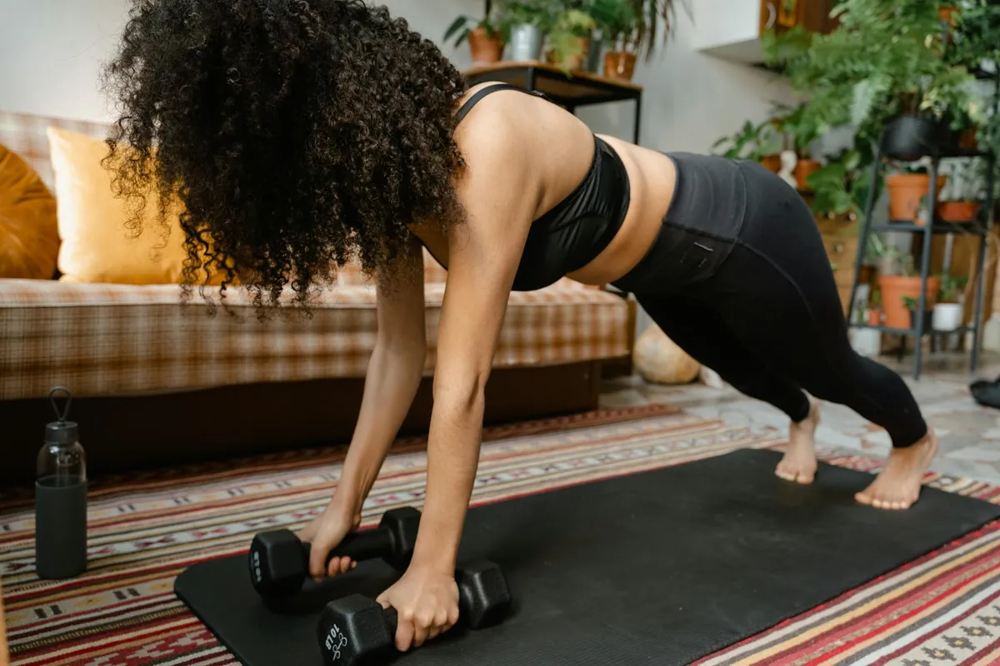

No-Equipment Strength for Small Spaces: Get Stronger

Key takeaways
- I remember staring at my tiny apartment living room, feeling completely defeated.
- I wanted to get stronger, to feel that satisfying burn after a workout, but the idea of fitting a squat rack or even a set of dumbbells seemed impossible.
- Focus on: Core Powerhouse.
I remember staring at my tiny apartment living room, feeling completely defeated. I wanted to get stronger, to feel that satisfying burn after a workout, but the idea of fitting a squat rack or even a set of dumbbells seemed impossible. My space was *so* small, and frankly, so was my budget for gym memberships or fancy home equipment. It felt like a cruel joke – wanting to invest in my health but having nowhere to put the tools to do it.
But here’s the thing: you don't need a sprawling home gym or a fortune to build real strength. I learned this the hard way, and I’m here to tell you that your small space is actually an advantage if you use it right. We’re talking about leveraging your own bodyweight and a few clever moves to get a killer workout.
Let’s dive into how you can transform that corner of your living room into your personal strength-building zone. It’s all about smart, efficient movements that target major muscle groups.
Core Powerhouse
Your core is the foundation of almost every movement. Forget crunches; we’re going deeper. Think planks, but make them harder. Try variations like side planks with hip dips, or plank jacks.
For your abs, bicycle crunches are fantastic. Lie on your back, hands behind your head, and bring your opposite elbow to your opposite knee. Keep it slow and controlled. This engages your obliques like nothing else. You can find more about core engagement in my related healthy tip.
Leg Day, No Weights Needed
Squats are king, and you don’t need a barbell. Bodyweight squats are your best friend. Focus on depth and control. Go as low as you comfortably can, keeping your chest up and back straight.
Lunges are another powerhouse. Forward, backward, and lateral lunges all hit your legs and glutes from different angles. Try curtsy lunges for an extra glute challenge. Remember to engage your glutes at the top of each movement.
Upper Body Blitz
Push-ups might seem simple, but they’re incredibly versatile. If standard push-ups are too tough, start on your knees. As you get stronger, try incline push-ups against a sturdy table or counter. This is a great way to build up to full push-ups. You can find another practical guide on building upper body strength here.
Triceps dips can be done using a stable chair or the edge of your couch. Just make sure it’s secure! Lower yourself down slowly, keeping your elbows tucked in.
For your back, I love the “superman” exercise. Lie on your stomach and lift your arms and legs off the floor simultaneously, squeezing your back muscles. Hold for a second, then lower with control.
The 2-Minute Win
Right now, stand up and do 10 bodyweight squats. Focus on your form: chest up, back straight, and push through your heels. Feel that activation? That's your body telling you it's ready for more.
Making Progress
The key to seeing results with bodyweight training is progressive overload. This means challenging your muscles more over time. How do you do that without adding weight? You can increase the number of reps, add more sets, slow down the tempo of each exercise, or try more challenging variations.
For example, if 10 regular squats feel easy, try 15, or try slowing down the descent for a count of three. This principle is crucial for consistent gains and is a similar wellness insight to my thoughts on staying motivated.
Pro-Tip: Don't underestimate the power of tempo. Performing exercises slowly and with control, especially during the eccentric (lowering) phase, can significantly increase muscle tension and growth, even with just bodyweight.
Staying Consistent
Consistency is everything. I found that scheduling my workouts, even just 20-30 minutes, made a huge difference. Treat them like any other important appointment. Having a dedicated space, even if it’s small, helps signal to your brain that it’s workout time.
Find exercises you actually enjoy (or at least tolerate!). Mix things up to keep it interesting. You can explore more home-workout guides to find new routines.
Your Strength-Building Checklist
- Schedule your workouts for the week.
- Designate a small, clear space for your exercises.
- Focus on form over speed.
- Challenge yourself by increasing reps or slowing down movements.
- Listen to your body and rest when needed.
Remember, building strength is a journey, not a race. Every small step counts. You’ve got this! This journey is also about how you stay consistent with this approach.
Educational only — not medical advice.
More in home-workouts
 home-workouts
home-workoutsCan You Build Muscle With No Equipment? Yes, Here's How!
Discover how to build muscle effectively with no equipment at home. Get practical no-equipment workout plans and tips fo
Read article → home-workouts
home-workoutsCan You Build Muscle With Just Bodyweight? Yes, Here's How!
Discover how to effectively build muscle using only your bodyweight. Learn practical, no-equipment workout plans and tip
Read article →Related posts
home-workoutsCan You Build Muscle With No Equipment? Yes, Here's How!
Discover how to build muscle effectively with no equipment at home. Get practical no-equipment workout plans and tips fo
Read article →home-workoutsCan You Build Muscle With Just Bodyweight? Yes, Here's How!
Discover how to effectively build muscle using only your bodyweight. Learn practical, no-equipment workout plans and tip
Read article → home-workouts
home-workoutsCan You Build Muscle With No Equipment? Yes, Here's How!
Discover how to build muscle at home without any gym equipment. Learn effective bodyweight exercises and workout plans f
Read article →